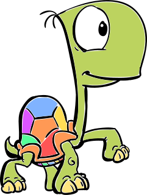

Begrüßungsveranstaltung
-
Audimax
Kennenlernen & Pizza
Schloss
Campustour
Schloss
O-Grillen
Infobau
Frühstück
TODO
Mensa
Mensa
FBI
-
Bouldern
TODO Treffpunkt
O-Phest
AKK
Eigenes Frühstück
Mathebau
O-Rallye
-
Mathebau
Kneipentour
Durlacher Tor,
Marktplatz,
Europaplatz
Frühstück
alinacafe TODO
O-Lympia
-
Forum
Abendessen
-
Oxford Ost, WO noch?
Spieleabend
Mathebau
Abschluss
-
Mensa
Mensa
Sport / Museen / SCC
vor der Mensa
Cocktailabend
HaDiKo K1-Bar

Mädels-Brunch
Mathebau
Mathe-Treff
Mathebau